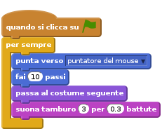
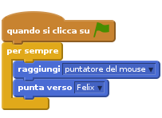
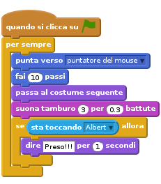
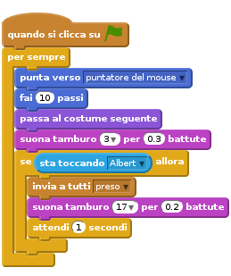
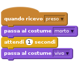
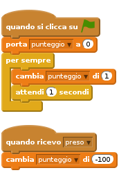

Introduzione
In questo esercizio creiamo un gioco dove il gatto Felix deve inseguire e catturare il topolino Albert . Il giocatore controlla Albert con il mouse e deve cercare di evitare di essere catturato da Felix. Piu’ a lungo si riesce ad evitare Felix e piu’ punti si accumulano ma fai attenzione a non essere catturato perche’ il tuo punteggio scendera tantissimo!

Passo 1: Felix segue il puntatore del mouse
Lista delle Attivita’
- Crea un nuovo progetto.
- Fai doppio-click nello stage vicino all’immagine (sprite) di Felix. Seleziona il tab
Sfondie clicca suScegli uno sfondo dalla libreria. Qui seleziona lo sfondo chiamatohall. Adesso cancella lo sfondo bianco facendo click sullaX bianca su sfondo nero in alto a destra - Adesso fai click sullo sprite di Felix. Poi fai click sulla
iin alto a sinistra dello sprite. Cambia il nome in Felix. - Accertati che Felix abbia uno stile di rotazione sinistra-destra facendo click su:
 .
. - Torna indietro facendo click sulla freccia in alto a sinistra
Crea questo script per Felix:

Verifica il tuo progetto
Fai click sulla bandierina verde.
- Felix insegue il puntatore del mouse?
- Quando Felix si muove sembra che stia camminando?
- Felix si muove alla giusta velocita’?
Salva il tuo progetto
Passo 2: Felix insegue Albert
Ora vogliamo che Felix insegua il topolino Albert e non il puntatore del mouse.
Lista delle Attivita’
- Crea un nuovo sprite facendo click su
Scegli uno sprite dalla libreriae seleziona Mouse 1. - Cambia il nome dello sprite in Albert facendo click sulla
iin alto a sinistra dello sprite. - Passa al tab Costumi e fai click su Albert nell’editor. Un rettangolo apparira’ attorno ad Albert. Tira un angolo per rendere Albert piu’ piccolo di Felix.
- Accertati che Albert abbia uno stile di rotazione sinistra-destra facendo click su: .
- Torna indietro facendo click sulla freccia in alto a sinistra
Crea questo script per Albert:

Verifica il tuo progetto
Fai click sulla bandierina verde.
- Felix insegue il puntatore del mouse?
- Felix insegue il topolino Albert?
Salva il tuo progetto
Passo 3: Felix ci dice quando ha catturato Albert
Vogliamo che Felix riconosca quando ha catturato Albert e ce lo dica.
Lista delle Attivita’
Cambia lo script per Felix in questo modo:

Verifica il tuo progetto
Fai click sulla bandierina verde.
- Felix ti dice quando ha catturato Albert?
Salva il tuo progetto
Passo 4: Albert diventa un fantasmino quando viene catturato da Felix
Anziche’ far dire a Felix quando prende Albert vogliamo che Albert diventi un fantasmino.
Lista delle Attivita’
Cambia lo script per Felix in modo da inviare un messaggio quando prende Albert:

- Aggiungi un nuovo costume per Albert facendo click sullo sprita e selezionando il tab
Costumi. Da qui selezionaScegli un costume dalla libreria. Seleziona il costume ghost2-a. - Rendi il fantasmino piu’ piccolo facendo click sullo sprite nell’editor e trascinando un angolo.
- Cambia il nome dei costumi di Albert. Il topolino chiamalo
vivoed il fantasmino chiamalomorto. Creau un nuovo script per Albert in modo che si trasformi in un fantasmino:

Verifica il tuo progetto
Fai click sulla bandierina verde.
- Albert si trasforma in un fantasmino quando viene catturato?
- Senti Felix emettere il giusto suono al momento giusto?
- Felix rimane fermo abbastanza a lungo per permettere ad Albert di fuggire?
Salva il tuo progetto
Passo 5: Manteniamo il punteggio
Aggiungiamo adesso un punteggio al gioco in modo da sapere quanto siamo bravi a tenere Albert in vita.
Il punteggio inizia da zero e viene incrementato di 1 per ogni secondo. Se Felix riesce a catturare Albert il punteggio viene diminuito di 100 punti.
Lista delle Attivita’
- Crea una variabile, per tutti gli sprite, che si chiama punteggio. Fai click su
Script, poi selezionaVariabili e Listee fai click suCrea una variabile. Inseriscipunteggiocome nome della variabile ed assicurati chePer tutti gli spritesia selezionato. Nello stage, crea questi due script:

Verifica il tuo progetto
Fai click sulla bandierina verde.
- Il punteggio viene incrementato di 1 ogni secondo?
- Il punteggio viene ridotto di 100 punti quando Albert e’ catturato?
- Cosa succede se Albert e’ catturato ed il punteggio e’ inferiore a 100?
- Il punteggio torna a zero quando inizi una nuova partita?
Salva il tuo progetto
Ben fatto, hai finito!!! Adesso puoi finalmente divertirti con il tuo gioco!!!
Ehi, non dimenticare che puoi condividere il tuo gioco con tutti i tuoi amici e familiari. Basta che fai selezioni il menu File e poi Share to website!!